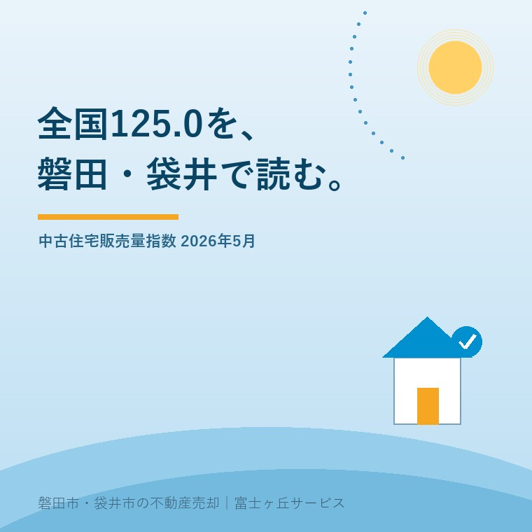

2026年9月4日｜カテゴリ：中古住宅／販売量指数／磐田・袋井

この記事の要点
Q. 中古住宅販売量指数が全国125.0なら、磐田や袋井の家も高く売れますか。
A. 125.0は価格ではなく、2010年平均を100とした全国の販売量指数です。2026年5月は前月比3.5％減でした。磐田市・袋井市の価格や成約件数を直接示さないため、近隣成約、築年、接道、境界、建物状態を重ねて査定します。
磐田市・袋井市・森町では、全国ニュースを地域の成約事例へ翻訳できる不動産会社に相談する選択肢があります。
「中古住宅の販売量が125.0」と聞くと、買主が増えていて、売主は価格を上げられそうに見えます。けれども、不動産の数字は何を数えたかを見ないと、売出価格を間違えます。
国土交通省は2026年8月31日、2026年5月分の既存住宅販売量指数を公表しました。全国の合計は125.0で、前月比3.5％減です。この記事では、全国ニュースを磐田市・袋井市の中古住宅査定へどう使うかを、確認日2026年9月4日時点で整理します。
国土交通省の既存住宅販売量指数は、建物の売買を原因とする所有権移転登記件数をもとに、個人が購入した既存住宅の販売量の動向を指数化したものです。2010年平均を100としています。
2026年5月の全国値は、合計の季節調整値が125.0で、前月比3.5％減でした。戸建住宅は124.6で3.4％減、マンションは124.2で4.4％減です。30平方メートル未満を除くマンションは114.3で2.9％減でした。
| 2026年5月・全国 | 指数 | 前月比 |
|---|---|---|
| 戸建・マンション合計 | 125.0 | 3.5％減 |
| 戸建住宅 | 124.6 | 3.4％減 |
| マンション | 124.2 | 4.4％減 |
| 30㎡未満を除くマンション | 114.3 | 2.9％減 |
意外なのは、数えているのが売出し広告の数ではなく、登記データを加工した販売量だという点です。2026年5月に広告を出した家や、契約した家だけを数えた統計ではありません。登記の時期と売主が考える売出し時期は、ずれることがあります。
既存住宅販売量指数125.0は、価格が2010年より25％高いという意味ではありません。販売量の水準を示す指数であり、価格上昇率、売却期間、成約件数ではありません。
対象にも注意が要ります。国土交通省は、建物の所有権移転登記のうち個人取得の住宅を加工し、既存住宅取引ではないものを除いています。その一方で、別荘、セカンドハウス、投資用物件なども含むと説明しています。
マンションでは床面積30平方メートル未満を含む値と、除く値を併用しています。小規模住戸の取得が全体を動かす影響を見分けるためです。磐田市や袋井市で戸建住宅を売る人が見るなら、全国合計だけでなく戸建の行を見ます。それでも地元の一軒へ直結はしません。
言い切ります。全国125.0は、磐田市・袋井市の売出価格を上げる根拠になりません。広い範囲の販売量を知る補助資料であり、個別住宅の値札ではないからです。
国土交通省の既存住宅販売量指数は、季節性を除くため月次で季節調整を行っています。毎月の数字をそのまま足したり、1か月の増減を1年の相場と読んだりしないことです。
磐田市・袋井市の中古住宅の売出価格は、全国指数をそのまま掛け算しません。私は、販売量のニュースを見たら、次の4項目へ翻訳します。
| 翻訳する項目 | 見る資料・状態 | 査定へのつなぎ方 |
|---|---|---|
| 生活圏 | 磐田駅・御厨駅周辺、郊外住宅地、旧集落など | 買主の通勤・通学と土地利用を近い事例で比べる |
| 土地と接道 | 土地面積、形、前面道路、再建築の条件 | 建物が古くても土地の使い方で価格の見方を分ける |
| 建物状態 | 築年、改修歴、雨漏り、設備、耐震、残置物 | 現況売却と修繕後の手取りを比べる |
| 権利と境界 | 名義、抵当権、境界、測量図、越境 | 買主が止まりやすい作業と費用を価格と別に説明する |
磐田市でも、駅へ出やすい戸建と、車利用が前提の住宅地と、農地に囲まれた旧集落では買主の探し方が違います。袋井市でも同じです。これは市全体の指数では見えない、物件ごとの条件です。地域の細かな見方は、磐田・袋井でエリアごとに売れる家を考える記事にもまとめています。
査定書で全国指数を使うなら、広域の状況を示す欄に置き、価格の直接根拠は近い成約事例にします。比較する事例の地区、成約時期、土地・建物面積、築年、接道、改修状態を聞けば、125.0という大きな数字に引っ張られにくくなります。
既存住宅販売量指数の良い点は、登記データを使い、全国共通の物差しで販売量を追えることです。戸建とマンションを分け、季節調整もしているため、仲介会社の一時的な感触とは別の角度を持てます。2026年8月31日に公表され、月次で更新される資料として、広域の地合いを確認できます。
試験運用の指数に、30平方メートル未満のマンションを含む値と除く値があることも良い。全体が動いたとき、小規模住戸の影響を考えられます。
注文したい点は、全国125.0だけが切り取られると、個別査定の数字に見えてしまうことです。全国、ブロック、都市圏などの広域指標と、磐田市・袋井市の一軒の価格には距離があります。市別の成約件数や価格を知りたい持ち主には、指数と近隣事例を並べた説明が必要です。
私はこう考えます。体験ストックに、この指数を使った特定の相談場面はありません。ここは実話ではなく、宅地建物取引士としての意見です。数字は大きいほど説得力があるように見えますが、持ち主の方が知りたいのは「この家をいくらで出し、どの条件なら引き渡せるか」です。だから私は、指数より先に物件の弱点と成約事例を出します。
私にも迷いがあります。全国の販売量が下がった月に、指数を査定書へ載せると、売主は市場が悪いと感じるかもしれません。載せなければ、広域の変化を説明する材料を捨てます。今の私は、指数を結論にせず、査定額を補正した成約事例と並べて、何を言える数字かを限定して出します。
今日できる確認は、販売量指数を保存することより、査定へ渡す資料をそろえることです。全国125.0を見て売ると決める必要はありません。次の順番なら、売る場合も保有する場合も材料が残ります。
前日の記事では、中部5県の指数を磐田市の査定へ翻訳しました。磐田市の中古住宅売却と2026年5月の中部の動きと合わせると、全国値と中部値の範囲を分けて読めます。
査定の仕組みを先に確認したい方は、査定額ができるまでのからくりも参照してください。価格が出たあとに、道路、境界、名義、建物状態を確認するのでは遅い場合があります。
今日の結論は、125.0を売値へ掛けないことです。全国の販売量は広域の温度計として保管し、地元の査定は近い成約事例と家の状態で組み立てます。まだ売らないという選択も、資料をそろえた後なら判断できます。
125.0だけを根拠に売出価格を上げることはできません。この指数は2010年平均を100とした全国の販売量の指標で、価格上昇率でも磐田市・袋井市の成約件数でもありません。地元の成約事例、築年、土地、接道、境界、建物状態を重ねて査定します。
今回の国土交通省の公表資料で示された全国値は、磐田市・袋井市の市別価格や成約件数ではありません。国土交通省は全国・ブロック別・都市圏別などの動向を公表しています。市別の売却判断には、同じ生活圏の成約事例と物件条件を使ってください。
同じ地区や生活圏の成約事例、土地面積、建物面積、築年、改修歴、接道、境界、雨漏りや設備状態を見ます。売却希望日から逆算した名義整理、残置物、内覧の準備も価格と同じ表に置きます。指数は広域の温度計として補助的に使います。

この記事を書いた人：大石浩之（宅地建物取引士）
大石浩之（磐田市／不動産業）。全国統計をそのまま値札にせず、磐田市・袋井市の成約事例、道路、境界、名義、建物状態へ翻訳して売主へ説明しています。プロフィール
本記事は2026年9月4日時点の公表資料に基づく一般的な説明です。既存住宅販売量指数は価格、成約件数、売却期間を直接示すものではなく、磐田市・袋井市の一軒ごとの査定を決めるものでもありません。価格、契約、税務・登記・相続の個別判断は宅地建物取引士、司法書士、土地家屋調査士、税理士などの専門家に確認してください。
富士ヶ丘サービス株式会社／静岡県磐田市見付5789番地1／TEL:0538-31-3308／静岡県知事 (2) 第14083号／代表取締役・宅地建物取引士 大石 浩之